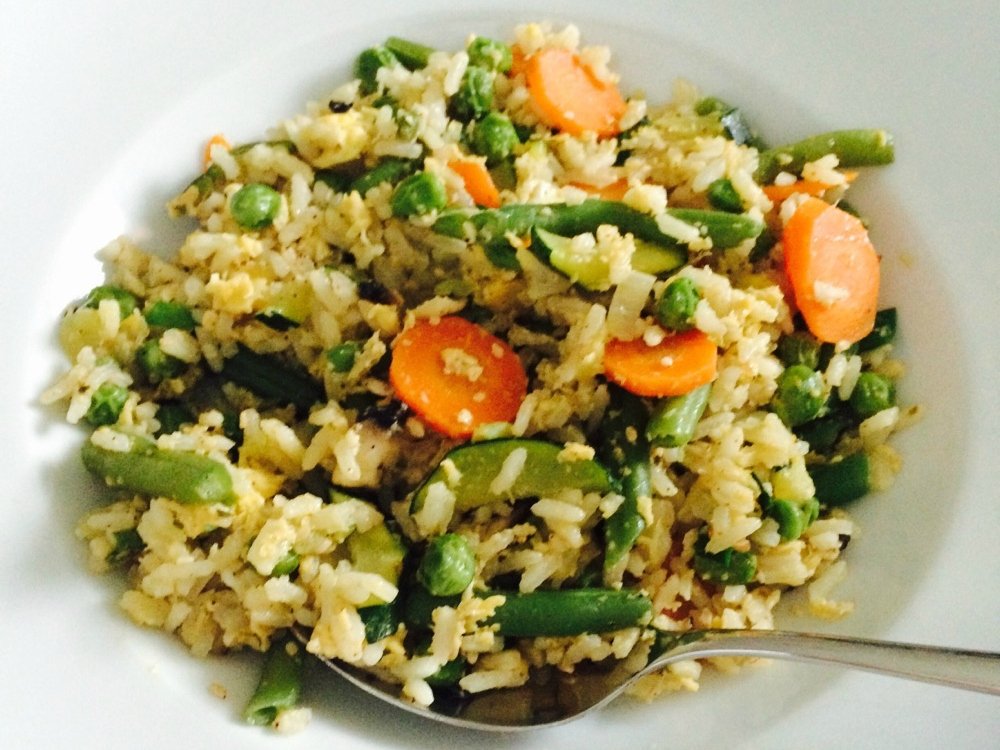

Fried Rice With Vegetables

Description
Fried rice is a dish of cooked rice that has been stir-fried in a wok or a frying pan and is usually mixed with other ingredients such as eggs, vegetables, seafood, or meat. ... As a homemade dish, fried rice is typically made with ingredients left over from other dishes, leading to countless variations.
Ingredients for the Fried Rice recipe to serve 4 people
Steps
- Chop the garlic and onion and cut the carrot and beans in small pieces.
- Fry the rice and put aside. Heat the oil in a frying pan and add garlic, onion, carrot and green beans.
- Add the kidney beans, sweet corn bell pepper, salt and pepper. Mix all with the fried rice